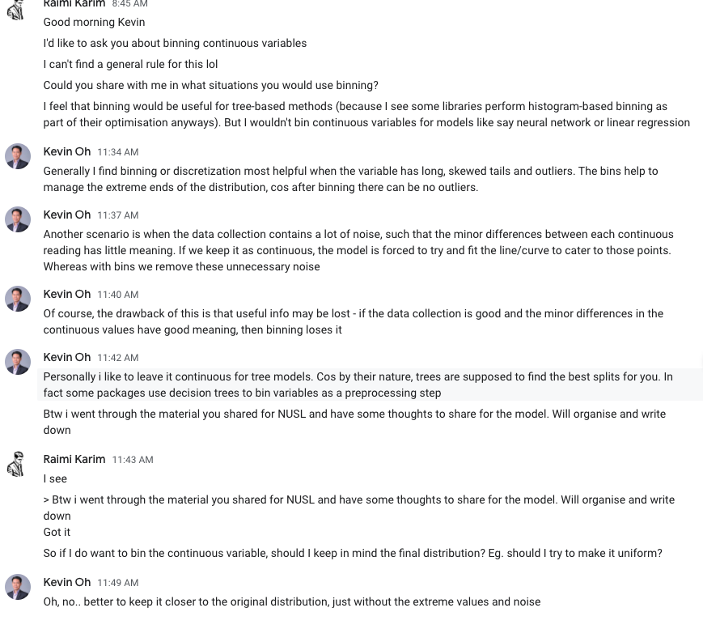

Feature transformation
Why transform?
For scaling:
- The goal of applying feature scaling is to make sure features are on almost the same scale so that each feature is equally important and make it easier to process by most ML algorithms.
- Scaling used used for neural networks and distance-based algorithms (eg. k-NN, SVM, NN). If an algorithm is not distance-based, feature scaling is unimportant (eg. Naive Bayes, LDA, tree-based models).
Type transformation
Categorical features
-
Ordinal
-
Nominal
- Drop
-
Label encoding: for ordinal variable (with clear ordering)
-
Binary encoding
-
One-hot encoding: for nominal variables (without intrinsic ranking)
üí° If cardinality is , resulting encoding does have to be n new features. It could be , where the last cardinality encodes for absence.
-
One to many
-
Interaction features (combine)
-
Categorical data: variable that can take a limited no. of values
-
High cardinality = index
-
Embedding
Note on OOV (out-of-vocabulary) bucket: Having an “Others” group will ensure that the categorical transformation is robust to unseen data.
üí° One-hot encoding categorical features is bad for tree-based models, especially because we create many binary sparse features and from the splitting algorithm‚Äôs point of view, they‚Äôre all independent. As a result, continuous variables are automatically given higher importance and chosen at the top of the tree to make a split. https://towardsdatascience.com/step-by-step-guide-to-explaining-your-ml-project-during-a-data-science-interview-81dfaaa408bf
Date time features
Inherently cyclic features. Can be treated as embeddings. Example to convert day (1-7) to 2 feature cols:
day_sin = np.sin((2*np.pi*col)/max(col))
day_cos = np.cos((2*np.pi*col)/max(col))
Numerical transformation
Min-max scaling
Max-Min Normalisation typically allows us to transform the data with varying scales so that no specific dimension will dominate the statistics, and it does not require making a very strong assumption about the distribution of the data
How?
Why?
So that we work with small numbers. The benefits are:
- Helps gradient descent converge more quickly.
- Helps avoid the NaN trap. Certain optimisers might result in NaNs is gradient update is too large.
- Helps the model learn appropriate weights for each feature. WIthout it, the model will pay too much attention to features having a wider range.
- Certain functions are not stable when dealing with large numbers e.g. softmax
When?
- When feature is approximately uniform
- You know the approximate upper and lower bounds
- Few outliers
Examples
Age
Counter examples
Income
Standardisation
aka Z-score normalisation, standard scaling
where is the mean of the sample, and is the standard deviation of the sample.
Standardization centers the features at mean 0 with a standard deviation 1.
Which is preferred by many algorithms.
Standardization keeps useful information from outliers.
When?
- When the feature distribution does not contain extreme outliers
Log scaling
Note that for small (such that ), using np.log(1+x) means performing np.log(1) which is 0. Using a slightly different transformation below, using np.log1p is more accurate in floating-point accuracy.
When?
- When data follows power law distribution
Examples
Ratings per movie
Feature clipping
How?
- By z-score (within 3 standard deviations)
- Set min and max
When?
- When there are extreme outliers
Normalisation
Normalization scales the features to a 0-1 range.
This is a special case of Min-max scaling.
It is useful when we need the data to be in a bounded interval.
- If Gaussian
- Domain knowledge (eg. Height)
Regular binning
Equally spaced boundaries

Quantile binning
Each bin has same number of samples
When?
Bimodal / multimodal / uneven distribution